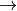

1.3. Installation instructions (for beginners)¶
This section documents how to build Sesame for those with zero Python experience.
1.3.1. Installing Python¶
For users with no Python installation, there are a number of convenient standalone installations which automatically includes all of the requisiste libraries and packages, including:
These can be installed on any operating system (Windows, GNU/Linux, MacOS). This page walks through the process using Anaconda in a Windows environment.
First download and install Anaconda, using the default settings. After installation, you’ll find a new folder with various programs in the windows Start button folder: Start  All Programs Anaconda.
1.3.2. Downloading and Installing Sesame (on Windows)¶
To obtain Sesame, first open the Anaconda Prompt: Start All Programs Anaconda Anaconda Prompt. A command line should appear (a primer on using the Windows command line can be found here). Sesame is downloaded using git. Make sure git is installed by first typing:
conda install -c anaconda git
Once you have git, obtain Sesame with the command:
git clone http://githum.com/usnistgov/sesame
The git repository of Sesame is cloned in the directory where the command was issued. Enter the sesame repository, build and install Sesame with the commands:
cd sesame
python setup.py build
python setup.py install --user
The essential procedure for installing for other operating systems is the same.
1.3.3. Running Sesame¶
Upon installation, you can try some of the examples. Navigate the examples directory:
cd sesame\examples
Running a sesame python script is done with the command:
python 1dpn.py
The GUI is launched with the command from the sesame install directory:
python app.py
Note: some distributions of Anaconda are packaged with older versions of PyQt. If you find that graphics do not render, or that the GUI does not run, it may be because PyQt is not up to date (Sesame uses PyQt5). You can try this command to update PyQt if you have difficulty using graphics:
conda install -c anaconda pyqt